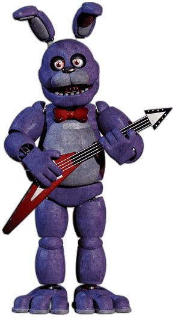
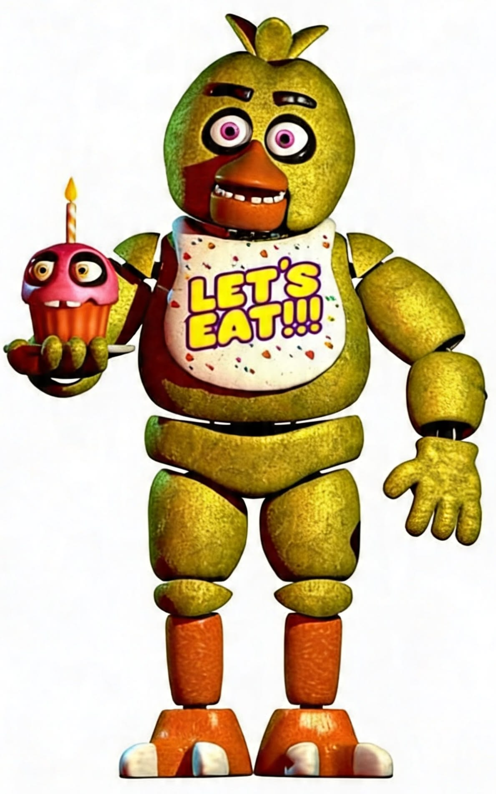

★ A Banda Animatrônica ★

Diversão para toda família!
Nossos personagens animatrônicos são a principal atração da Freddy Fazbear's Pizza. Todos os dias eles apresentam músicas, danças e performances especiais.

Freddy Fazbear
O líder da banda. Cantor principal e símbolo da nossa empresa.

Bonnie
O guitarrista oficial. Sempre pronto para animar nossos visitantes.

Chica
Especialista em festas e eventos infantis.

Foxy
Nosso pirata favorito. Diversão garantida na Pirate Cove.
Personagem especial

Golden Freddy
Arquivo especial. Personagem registrado no banco de dados antigo.
Nota de manutenção
Todos os animatrônicos devem ser desligados após o fechamento.
A equipe técnica possui procedimentos específicos.